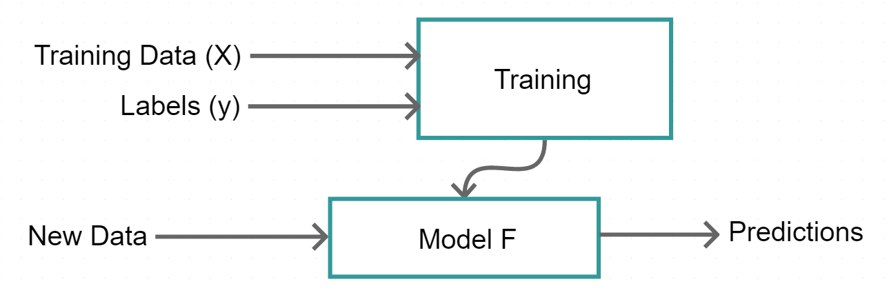
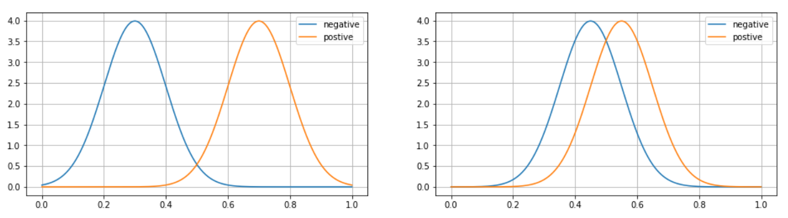

class: center, middle # IEMS 5780<br/>Building and Deploying Scalable<br/>Machine Learning Services ### Lecture 2 - Machine Learning #### Albert Au Yeung<br/>13th September, 2019 --- class: center, middle # Machine Learning --- # Agenda - Introduction to Machine Learning - Basic Concepts - Common Algorithms - Evaluation and Diagnosing - Machine Learning in Python --- class: middle, center # Introduction to Machine Learning --- class: equal-split # Machine Learning .column-left[ * A computer program generates an input given and output, given some **pre-defined function(s)** * ML aims at **learning** a function that maps the inputs to the outputs * Instead of having a programmer writing down the **logic**, we let the computer **learn** from the data * Given historical data, we train a **model** to generate predictions on **future or unseen** inputs ] .column-right[ <center> <img src="img/l1-ai-ml-dl.png" width="90%"/> </center> ] --- # Machine Learning * Given some input `\(X\)` and ouptut `\(y\)`, find a function `\(F(X)\)` that maps `\(X\)` to `\(y\)`. * Example: given (<span style="color:#CC4455">location, size</span>) (`\(X\)`), predict the <span style="color:#CC4455">price</span> of a house (`\(y\)`). * Another example: give (<span style="color:#CC4455">previously watched movies</span>) (`\(X\)`), predict the <span style="color:#CC4455">next movie(s) that will be watched</span> (`\(y\)`). <center>  </center> --- # Case Study: Spam Email Detection * Let's consider the task of detecting **[spam or junk emails](https://en.wikipedia.org/wiki/Email_spam)**. * Examples of spam emails: - scams - phishing - mass email marketing / advertisement - and [many more](http://web.mit.edu/network/spam/examples/) * How would you approach this problem? * (It is a **classification** task: for each email, we want to label it as "spam" or "non-spam") --- # Case Study: Spam Email Detection ## A non-ML approach * To classify incoming emails, we need to find some **patterns** that are unique in each classes * Example of useful patterns: - Name of the sender of the email - Key words/phrases in the subject (e.g. "You have won a lottery!") - A lot of words in capital letters in the content - ... * You then write a program to look for these patterns in a email received * **Done?** --- # Case Study: Spam Email Detection ## Limitation of a non-ML Approach * You may need to have **a lot of** rules * Rules too general may give you **false positives** * Rules too specific will be useless if the spammers make slight changes * How do you **weight** the importance of each rule? * ... --- # Case Study: Spam Email Detection ## A Machine Learning Approach <center> </center> --- # Case Study: Spam Email Detection ## Advantages of using ML * Learn the important patterns **automatically** from the training data * An ML algorithm can go through **a large number of examples** to learn patterns * Able to discover the **relative importance** of different patterns * Model can be **re-trained** when the data has changed<br/><br/><br/> * <i>Can you think of any weakness of ML?</i> --- # Basic Machine Learning Problems - **Supervised Learning**<br/>You have **labelled data** for computer to learn from - Regression - Classification<br/><br/> - **Unsupervised Learning**<br/>You don't have labelled data, but you want to find patterns in the data - Clustering / Dimensionality Reduction --- class: equal-split # Regression .column-left[ - In **regression**, we want to predict the value of a **continuous** variable based on some inputs - **Examples**: - Predict [the price of a house](https://www.kaggle.com/c/zillow-prize-1) - Predict [the number of products sold in a shop](https://www.kaggle.com/c/competitive-data-science-predict-future-sales) - Predict the number of users who will click an advertisement - Predict [the price of a product given its descriptions](https://www.kaggle.com/c/mercari-price-suggestion-challenge) ] .column-right[ <center> </center> <br/><br/> (From Economist: [Corrosive corruption](https://www.economist.com/graphic-detail/2011/12/02/corrosive-corruption)) ] --- class: equal-split # Classification .column-left[ * Categorizing an input sample into one of the **pre-defined** classes * **Examples**: - Predict [whether a person will survive a shipwreck](https://www.kaggle.com/c/titanic) - Detect [the sentiment of a movie review](https://www.kaggle.com/c/movie-review-sentiment-analysis-kernels-only) - Predict [whether a driver will initiate an insurance claim](https://www.kaggle.com/c/porto-seguro-safe-driver-prediction) * In fact, a lot of problems can be defined as **classification problems** ] .column-right[ <center> <img src="img/l2-imagenet-classification.png" width="100%"/> </center> <br/> [ImageNet Classification with Deep Convolutional Neural Networks](www.cs.toronto.edu/~fritz/absps/imagenet.pdf) – Krizhevsky et al. 2012 ] --- class: equal-split # Unsupervised Learning / Clustering .column-left[ - To identify **hidden patterns** in a dataset without labels - **Examples**: - Understand what products are usually bought together ([Basket Analysis](https://en.wikipedia.org/wiki/Affinity_analysis)) - Understand major topics of news articles (e.g. [News Clustering](http://data-art.net/news_cluster/)) - Identifying [communities](https://en.wikipedia.org/wiki/Community_structure) in social networks - Clustering can be used to perform [dimensionality reduction](https://en.wikipedia.org/wiki/Dimensionality_reduction) ] .column-right[ <center> </center> <br/> Clusters of news articles about smog between May 2016 and May 2017 ([Source](https://www.weforum.org/agenda/2017/05/smog-in-5-charts/)) ] --- # Common ML Algorithms ### In the following, we will introduce a few common ML algorithms: * **Regression** - Linear regression<br/><br/> * **Classification** - Logistic regression - Decision trees<br/><br/> --- # Regression: Linear Regression * In regression, we want to predict the values of some targets given some **predictors** or **features** * In the simplest case, we can assume that the relationship between the features and the target is **linear**: $$y = a + bX$$ - In the equation above, `\(y\)` is the target, `\(X\)` is the feature, `\(a\)` is the intercept, and `\(b\)` is the weight of the feature - **Learning** means estimating a suitable value for both `\(a\)` and `\(b\)` such that the resultant straight line best approximate the data we observed --- class: equal-split # Linear Regression - Consider an example of predicting the **price of a house** given its **area** .column-left[ - A few samples from a house price dataset <center> </center> - Each row can be considered as a **training sample** ] .column-right[ <center> </center> ] --- class: equal-split # Linear Regression .column-left[ - Using the [ordinary least squares](https://en.wikipedia.org/wiki/Ordinary_least_squares) method, we can estimate the `\(a\)` and `\(b\)` in the equation - The line with the estimated values of `\(a\)` and `\(b\)` is plotted on the right - Note that **NOT** all points are lying on the line (Why?) - How can we **predict** the price of other houses? - How do we tell whether this is a **good** model? ] .column-right[ <center> </center> ] --- # Linear Regression - In the above example, we have **one** feature, which is the area of the house - Can you think of **other features** that are useful for predicting the price? - If we have more features, the equation will become $$y = b_0 + b_1 x_1 + b_2 x_2 + ... + b_n x_n$$ - This is still a **linear regression** model, sometimes called **multiple linear regression** - `\(b_0\)` is called the **bias term**, while `\(b_1\)` to `\(b_n\)` are the weights of the features - `\(y\)` is a **weighted linear combination** of the values of `\(x_1\)` to `\(x_n\)` --- # Linear Regression * If we consider `\(x_0 = 1\)`, then we can write the linear regression equation in terms of vectors * Let `\(\boldsymbol{x}\)` be the feature vector `\((x_0, x_1, ..., x_n\))` representing the input * Let `\(\boldsymbol{b}\)` as a vector of the weights `\(b_0, b_1, ..., b_n\)`<br/> (The `\(b_i\)`'s are the parameters of this model, and in many cases are denoted by `\(\boldsymbol{\theta}\)`) $$y = \theta^Tx$$ * If we consider the **whole training dataset** with `\(m\)` samples, and each input has `\(n\)` features (and thus we will have `\(n + 1\)` parameters): <center> </center> --- # Summary ### What have we learnt? * What is a **model**? - Your assumptions of how things work - A simplification of the world (or at least the problem you are trying to solve) - A model is usually characterized by some **parameters** - (Thus machine learning usually involves **parameter optimization**) * The inputs are **represented** by **feature vectors** - **Representation** of input data is very important in ML - Very often we may even want to [learn how to represent the raw data](https://en.wikipedia.org/wiki/Feature_learning) --- # Classification * In classification, we are interested in putting each input sample into **two (or more) pre-defined classes** * In other words, the target variable `\(y\)` is **discrete** * Some **commong algorithms** for classification: - Logistic regression - Support vector machines - Decision Trees - K-nearest-neighbour (kNN) * Some regression tasks can be **simplified** to classification tasks - E.g. predicting whether the price of a stock will go up, down or unchanged instead of predicting its absolute value --- # Classification * For simplicity, we first consider the case in which we have **two classes** (binary classification) * You can give the classes any names (e.g. cat vs. dog, rainy vs. sunny), but when doing the maths, we would simply label them as `0` and `1` * Again, we consider that an input is represented as a **feature vector** * Can we directly apply linear regression to a classification problem? $$y = \theta^Tx$$ --- class: split # Classification .column-left[ * Consider an example of predicting whether a customer will **buy** a certain product given his/her demographic information * We represent each person as a **feature vector** * In our training data, we set `\(y = 1\)` if the customer has bought the product, and `\(y = 0\)` if the customer has not ] .column-right[ <center> </center> ] --- # Logistic Regression * We can apply linear regression on this problem, but it is likely to perform badly * For classification, we want to have a **decision rule**, linear regression's output lies on a straight line, and may not allow picking a threshold easily * We don't really want the model to output some values too different from `0` or `1` * However, we can apply a **transformation** to the output of linear regression: <center> <img src="img/l2-logistic-function.png" width="25%"/> </center> * `\(g(z)\)` is called the **logistic function** or **sigmoid function --- class: equal-split # Logistic Regression .column-left[ <center> <img src="img/l2-logistic-function.png" width="50%"/> </center> * The logistic function has certain characteristics - Its value is always bounded by 0 and 1 - Its value tends to `\(1\)` if `\(z\)` tends to `\(+ \infty\)`, and tends to `\(0\)` if `\(z\)` tends to `\(- \infty\)` - It is more likely to output values close to `\(0\)` or `\(1\)` ] .column-right[ <center> </center> ] --- class: split # Decision Trees .column-left[ - Another commonly used algorithm for classification: **decision trees** - Consider the example on the right again - Can we generate some **rules** from the data that can allow us to predict the outcome accurately? - For example:<br/>`(gender = M) AND (age < 40) --> buy = 1` - **Decision trees** are constructed by finding these conditions to **split** the dataset into smaller subsets ] .column-right[ <center> </center> ] --- class: split # Decision Trees .column-left[ * A few algorithms have been proposed for **decision trees learning**, such as [ID3](https://en.wikipedia.org/wiki/ID3_algorithm) and [C4.5](https://en.wikipedia.org/wiki/C4.5_algorithm) * The general idea is similar: - Identify a feature which is **best** for spliting a given subset of the data - What is best is determined by some metrics, such as the [Gini coefficient](https://en.wikipedia.org/wiki/Gini_coefficient) or [information gain](https://en.wikipedia.org/wiki/Information_gain_in_decision_trees) - Create a **new node** using that feature - Continue the process on the subsets created by the split ] .column-right[ <center> <img src="img/l2-cart-titanic.png" width="100%"/> <br/> An example decision tree learned from the Titanic survival dataset. </center> ] --- # Decision Trees * Decision trees can also be used to perform regression (thus the term **CART: Classification And Regression Trees**) * Decision trees are usually vulnerable to **overfitting** (more on this later), thus we usually have to control the **depth** of a tree * It is commonly used with **ensemble methods** to generate more accurate predictions, resulting in algorithms such as [random forests](https://en.wikipedia.org/wiki/Random_forest) or [gradient boosted trees](https://en.wikipedia.org/wiki/Gradient_boosting#Gradient_tree_boosting) * References: - [Decision Trees and Ensemble Models](https://ml.berkeley.edu/blog/2017/12/26/tutorial-5/) - [Decision Trees - scikit-learn](http://scikit-learn.org/stable/modules/tree.html) --- # Choosing ML Algorithms <center> <img src="img/l2-sklearn-ml-map.png" width="75%"/> <br/> http://scikit-learn.org/stable/_static/ml_map.png </center> --- class: middle, center # Basic Concepts in Machine Learning --- # Working on Machine Learning Projects * Nowadays, it is easy to apply machine learning to a problem and obtain some results ```python from sklearn.datasets import load_iris from sklearn.linear_model import LogisticRegression from sklearn.metrics import accuracy_score iris = load_iris() X = iris.data # Training data inputs y = iris.target # Training data labels model = LogisticRegression() # Model initialization model.fit(X, y) # Training (fitting) y_pred = model.predict(X) # Generating predictions accuracy_score(y, y_pred) # Computing a metric (accuracy in this case) ``` * However, what would you do after this? Is it done *right*? Is it *good* enough? How to *improve* it? --- # Generalization * (**Generalization theory** is a huge topic in statistical machine learning, let's discuss it conceptually here) * When training a model, our hope is that what is learnt from **the past (training data)** can be applied to **predict the future (test data / unseen data)** * In general, we are making some assumptions: - the past and the future are **similar** - **patterns** observed in the past will appear in the future * Since our aim is to perform well in predicting the future: - Our model should **not only** achieve high accuracy on the training data - Our model needs to find out patterns that are likely to appear in **both the past and the future**, and ignore other **noise** --- # Model Complexity * A **model** can be considered as a simplified view of a problem - Some features that are important and are related to the target - The relationship between the features and the target (e.g. linear vs. non-linear) - Random noise * A **complex** model captures complex relationship between `\(X\)` and `\(y\)`, but it is also more likely to pick up noise --> **overfitting** * A **simple** model is easy to interpret, but may not be able to capture the true relationship between `\(X\)` and `\(y\)` --> **underfitting** --- class: middle, center # Evaluation --- # Evaluation * **Evaluation** is an important step in any machine learning project * Purposes: - Understand the **quality of predictions** of a trained model - Understand when does a model perform well or badly - Understand the **limitation** of the model * How: - Decide on a suitable **metric(s)** for your problem - Pick an algorithm and train a model - Compute the metric on the predictions on a test dataset --- # Evaluation ## Splitting Your Dataset * Let's assume that we have a dataset of 10,000 data points * You should not **train** your model and **evaluate** your model on the same dataset * **Why?** - We need to know whether the model can be generalized to **unseen** data<br/>(The model may only be **memorizing** the training data) - We need some test dataset to help us **fine tune** our model(s) * **How?** - **Split** your dataset for different purposes --- # Splitting Your Dataset * It is usually advised that we have **three splits** of the dataset: 1. **training set**: for training your model(s) 2. **validation/development set**: for tuning your model's **hyperparameters** 3. **test/holdout set**: for testing the performance of your model * For example: <center> </center> --- # Splitting Your Dataset * There is no standard of the ratio of train/val/test data samples * Generally: - You want to use **as much data as possible** to train your model - You want to have a **reasonable size** of validation and test data (so that your evaluation is meaningful) * When you really don't have enough data - It is also acceptable to split only into two sets: **train** and **test**<br/>e.g. 70% for training and 30% for testing --- # Splitting Your Dataset * Splitting your data is NOT a trivial task * Normally, you **shuffle** your data and **randomly** splitting the data into different sets * Consider an **imbalanced dataset** for classification: 90% `0`s and 10% `1`s - If you split randomly, there are chances that you don't have any `1`s in your training dataset! - In this case, you may want to use [stratified sampling](https://en.wikipedia.org/wiki/Stratified_sampling), to make sure that the ratio of `0`s and `1`s in all subsets are 9:1. <center> </center> --- # Splitting Your Dataset * Consider another task of predicting **time-series** data (forecasting) - Should you split your data **randomly**? * Your task is to train a model on **past** data to predict **future** targets * You should respect the **chronological order** of the data<br/><br/> <center> </center> --- # Cross Validation * The train/test procedure can actually be repeated on **different splits** * This usually reduces the **variance** of the estimated performance of a model * A commonly used cross validation approach is **K-fold cross validation** - For example, when **k=4**, data is split into **4** subsets: - Each time, **3** subsets are used for training, the remaining **1** is for testing <center> </center> --- # Metrics * When evaluating the performance of a model, we need to have: - **ground truths**: the correct answer / the true labels of the inputs - **metric**: a measure of how good the predictions are compared to the ground truths * In the following, we focus on: - Metrics for **regression** tasks: usually a function that reflects how the **difference** between the predicted values and the true values - Metrics for **classification** tasks: usually a function that reflects how often the predicted values are the same as the true values * Ref: [Model evaluation: quantifying the quality of predictions](http://scikit-learn.org/stable/modules/model_evaluation.html) --- # Metrics for Regression * In regression tasks, for each test data point, we have a ground truth value `\(y\)` and a predicted value `\(\hat{y}\)` * Intuitively, a model is good if all `\(\hat{y}\)`'s are close to their respective `\(y\)`'s * Hence, a straight forward metric would be the **Mean Absolute Error (MAE)**: - The mean of the absolute differences for all samples $$ MSE(\boldsymbol{y}, \boldsymbol{\hat{y}}) = \frac{1}{n} \sum_{i=0}^{n-1}|y_i - \hat{y}_i| $$ --- # Metrics for Regression * Another commonly used metric for regression is the **Root Mean Squared Error (RMSE)** - The square root of the mean of squared differences for all samples - Let `\(\boldsymbol{y}\)` be the vector of ground truth, and `\(\boldsymbol{\hat{y}}\)` be the vector of predicted values, root mean squared error is defined by: $$ RMSE(\boldsymbol{y}, \boldsymbol{\hat{y}}) = \sqrt{\frac{1}{n} \sum_{i=0}^{n-1}(y_i - \hat{y}_i)^2} $$ --- # Metrics for Regression * MSE will be **larger** if the model makes predictions that are **far** from the truth values (due to the square) <center> </center> https://stats.stackexchange.com/questions/147001/is-minimizing-squared-error-equivalent-to-minimizing-absolute-error-why-squared --- # Metrics for Classification * In classification, things are different: - The labels or classes do NOT lie on a continuous spectrum - Things are discrete: predictions are either **correct** or **incorrect** - We CANNOT measure **distance** between two labels * In the following, we will discuss some important metrics for classification: - Accuracy - True/False positives/negatives - Precision and Recall - Area Under the ROC Curve --- # Accuracy * A straight-forward metric for classification is **accruacy** * Defined by **number of correct predictions / total number of predictions** * For example: $$ y = (1, 0, 0, 0, 1, 1, 1, 0, 0) \\\ \hat{y} = (1, 1, 1, 0, 0, 1, 1, 0, 0) $$ * Then, accuracy is **6/9 = 66.7%** * This can also be applied to multi-class classification * What is the limitation of the **accuracy score**? --- # True/False Positives/Negatives * To have a better understanding of how well a model performs in predicting different classes * Consider a binary classification task, where we have classes **0** (negative) and **1** (positive) * We consider four different types of predictions: - **True Positives (TP)**: model predicted 1 correctly - **True Negatives (TN)**: model predicted 0 correctly - **False Positives (FP)**: it is 0, but model predicted 1 - **False Negatives (FN)**: it is 1, but model predicted 0 * By using the number of these four types of predictions, we can come up with some useful metrics --- # The Confusion Matrix <center> </center> - Reference: [https://en.wikipedia.org/wiki/Confusion_matrix](https://en.wikipedia.org/wiki/Confusion_matrix) --- # Precision * **Precision** aims at answering the following question: - **How often the model is correct when it predicts the target should be a certain class?** * Precision is defined by: $$ Precision = \frac{TP}{TP + FP} $$ * For example: $$ y = (1, 0, 0, 0, 1, 1, 1, 0, 0) \\\ \hat{y} = (1, 1, 1, 0, 0, 1, 1, 0, 0) \\\ $$ * We have **TP = 3**, **FP = 2**, so **precision = 3/5 = 60%** --- # Recall * **Recall** aims at answering the following question: - **How many data of a certain class can the model correctly identifies?** * Recall is defined by: $$ Recall = \frac{TP}{TP + FN} $$ * For example: $$ y = (1, 0, 0, 0, 1, 1, 1, 0, 0) \\\ \hat{y} = (1, 1, 1, 0, 0, 1, 1, 0, 0) \\\ $$ * We have **TP = 3**, **FN = 1**, so **recall = 3/4 = 75%** --- class: equal-split # Task: Aeroplane Classifier .column-left[ * If a model outputs **0** (not-an-aeroplane) for all images: - accuracy = 7/9 = 77.7% - precision = (undefined) - recall = 0% * If a model outputs **1** (is-an-aeroplane) for all images: - accuracy = 2/9 = 22.2% - precision = 2/9 = 22.2% - recall = 2/2 = 100% ] .column-right[ <center> </center> ] --- # Trade-off Between Precision and Recall * There is usually a **trade-off** between precision and recall * For a classifier that outputs a score between 0 and 1, setting the **threshold** has a significant impact on precision and recall * With a **high** threshold (e.g. 0.8) - Most predictions will be considered as **negatives** - Precision will tend to be **higher** (model is more **conservative**) - Recall will tend to be **lower** (likely to miss some positives) * With a **lower** threshold (e.g. 0.3) - Most predictions will be considered as **positives** - Precision will tend to be **lower** (more false positives) - Recall will tend to be **higher** (more positives identified) --- # F1 Score * **F1 Score** (or **F-Measure**) is a measure that takes [both precision and recall into account](https://en.wikipedia.org/wiki/F1_score) * In many cases, we would like to have a **balance** between precision and recall * F1 Score allows us to choose a model that is reasonable good in terms of both precision and recall * F1 is the **harmonic average** of precision and recall: $$ F_1 = \frac{2}{\frac{1}{Recall} + \frac{1}{Precision}} $$ --- # Ranking Positives and Negatives * In some tasks, we are interested in **accuracy**, ideally we want **every** prediction to be correct * However, in some other tasks, it is sufficient that we can identify **one (or a few) positive cases** from a batch of inputs (Examples?) * Or, in some cases, we are more concerned about the **ranking** of the inputs (Examples?) * Ideally we want the positives to be always scored **higher** than the negatives <center>  </center> --- # Area Under the ROC Curve * **AUC** allows us to estimate the ability of a model to rank positives higher than negatives * The **[ROC Curve](https://en.wikipedia.org/wiki/Receiver_operating_characteristic)** (Receiver Operating Characteristic Curve) is plot by varying the **decision threshold** to obtain different **true positive rates (TPR)** and **false positive rages (FPR)**: $$ TPR = Recall = \frac{TP}{TP + FN} $$ $$ FPR = \frac{FP}{FP + TN} $$ --- class: equal-split # Area Under the ROC Curve .column-left[ * Get a set of (FPR, TPR) points by varying the decision threshold * Plotting the points will usually result in a graph that looks like the one on the right * The larger the **area under the curve**, the better is your model (*Why?*) ] .column-right[ <center> </center> ] --- class: middle, center # Machine Learning in Python --- # Machine Learning in Python * Many programming languages can be used to do machine learning, but mostly are done in **Python** * Python has recently found to be the most [popular programming language](https://www.economist.com/graphic-detail/2018/07/26/python-is-becoming-the-worlds-most-popular-coding-language) * A lot of machine learning algorithms and tools are available in Python<br/>(Ref: [Top 20 Python Libraries for Data Science](https://medium.com/activewizards-machine-learning-company/top-20-python-libraries-for-data-science-in-2018-2ae7d1db8049)) * The [Jupyter notebook](http://jupyter.org/) has enabled interactive computing and fast prototyping with Python - Try it on [Google's Colaboratory](https://colab.research.google.com/) (You can even use GPU for free there!) --- # Machine Learning Libraries ### Some commonly used libraries/packages in Python for machine learning * **Numpy**, **Scipy** (numerical and scientific computation) * **Pandas** (data preprocessing and analysis) * **Scikit-learn** (machine learning) * **Gensim**, **NLTK** (natural language processing) * **Tensorflow**, **Keras**, **PyTorch** (deep learning) --- # Numpy and Scipy * These are packages for doing numerical and scientific computation * Numpy provides fast manipulation of **vectors** and **matrices** * Scipy provides various functions for **scientific computation** ```python import numpy as np a = np.random.rand(10) # a vector of length 10 randomly initialized b = np.random.rand(10) # another vector c = a.dot(b) # compute dot product of two vectors ``` --- # Scikit-learn * A widely used open source machine learning library implementing a log of commonly used machine learning algorithms * Most algorithms are well documented: (e.g. http://scikit-learn.org/stable/modules/tree.html) * It has a common API for most machine learning algorithms ```python from sklearn.linear_model import LinearRegression model = LinearRegression() # Create an instance of a model model.fit(X_train, y_train) # Fit a model (i.e. training) model.predict(X_new) # Apply model on new data points ``` --- # Scikit-learn ### Check the examples: * Linear regression:<br/>[http://scikit-learn.org/stable/auto_examples/linear_model/plot_ols.html](http://scikit-learn.org/stable/auto_examples/linear_model/plot_ols.html) * Logistic regression:<br/>[http://scikit-learn.org/stable/auto_examples/linear_model/plot_iris_logistic.html](http://scikit-learn.org/stable/auto_examples/linear_model/plot_iris_logistic.html) * Decision trees:<br/>[http://scikit-learn.org/stable/modules/tree.html](http://scikit-learn.org/stable/modules/tree.html) --- class: middle, center # Assignment 0 --- # Assignment 0 * The first assignment: **Basic Python programming** * Due date: **23:59, 21st September, 2018 (Friday)** * A notebook template can be found at<br/>https://drive.google.com/open?id=1Fnp6R1YplvwhIfo1YgyMX2_5Zp9l8fav * You should finish all problems in a **Jupyter notebook** * Follow the instruction to submit a `.ipynb` file to Blackboard * If you have any questions, ask on Slack --- class: center, middle # End of Lecture 2